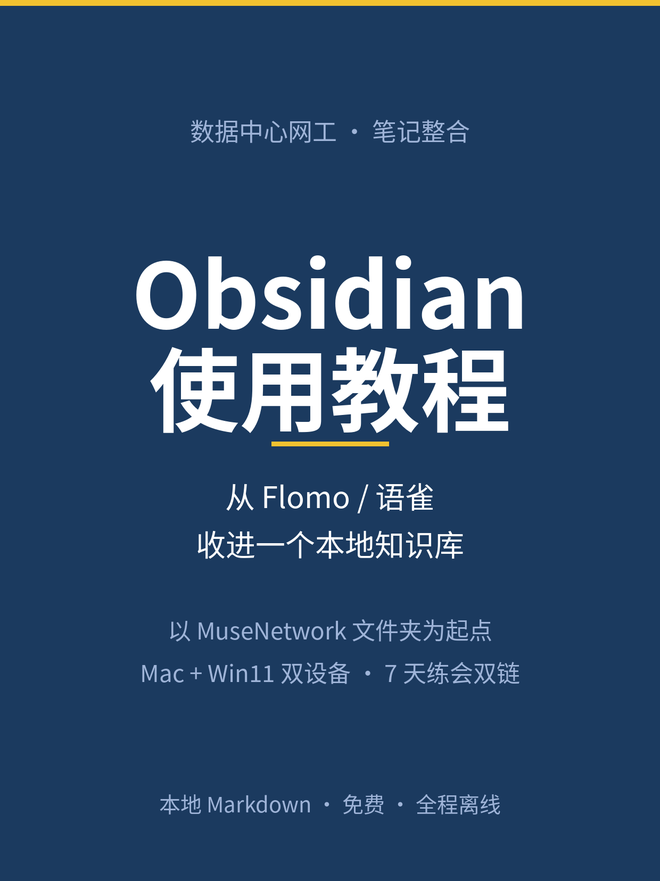
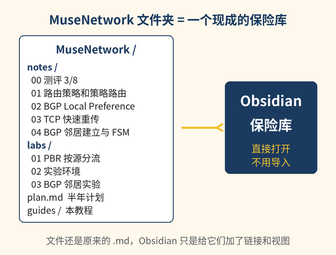
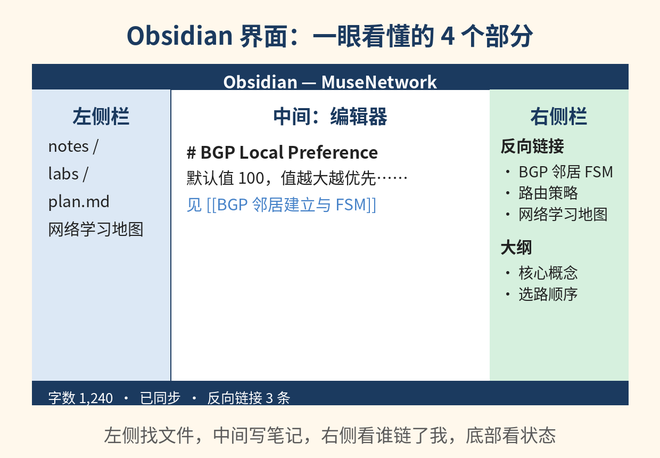
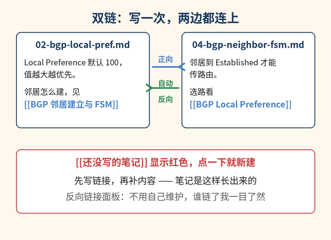
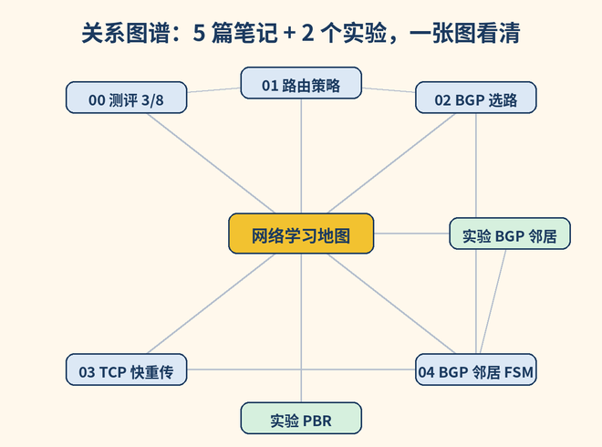
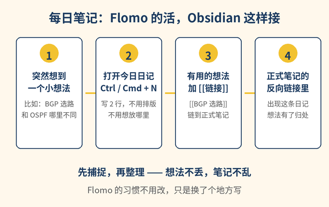
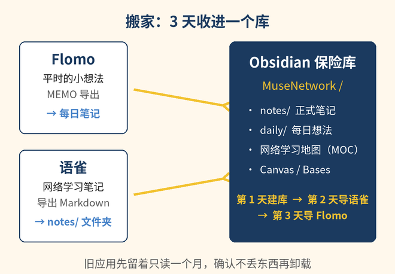

写给谁： 数据中心网工，正在半年冲高级，平时用 Flomo 记小想法、用语雀写网络学习笔记，最近开始学 Obsidian，但还不会关联笔记。
这本教程的起点： 你的 MuseNetwork 文件夹（notes/ 5 篇笔记、labs/ 3 个实验、plan.md）已经是现成的 Markdown 文件夹 —— 它就是一个等着被打开的 Obsidian 保险库，不用重写、不用导入。
一句话结论：把 Flomo 和语雀都收进 Obsidian，只留这一个。
5 个理由，都和你的情况直接相关：
[[ ]]、反向链接、关系图谱是 Obsidian 的核心能力，不是插件。Notion 没有内置图谱，笔记之间只能靠数据库关联，越记越散。说实话，Notion 什么时候更好： 需要多人实时协作、重度数据库和表单（比如团队项目管理、CRM），Notion 是更好的选择。但你的笔记是个人学习用的，不需要实时协作，数据库也用不上 —— 那些优势你用不着，代价（专有格式、在线依赖、没有图谱）却要全付。
| 维度 | Obsidian | Notion |
|---|---|---|
| 价格 | 核心功能完全免费，个人和商业都免费，不用注册 | 免费版个人无限页面/块，上传单文件 5 MB，页面历史 7 天；Plus 每月 10 美元（按年付），Business 每月 20 美元（按年付，含完整 Notion AI） |
| 笔记存在哪 | 你电脑上的普通 Markdown 文件，一个文件夹就是一个保险库 | 存在 Notion 的服务器上，本地只留缓存 |
| 离线 | 默认全程离线，没网照常用 | 2025 年 8 月才有离线模式，要逐页标记“离线可用”，每个数据库视图只下载约 50 行，浏览器版无离线，AI/自动化/嵌入要联网 |
| 链接 / 图谱 | [[双链]]、反向链接、全局和局部关系图谱，都是内置核心功能 | 页面可以互相链接，但没有内置图谱；关联主要靠数据库 |
| 数据库 | Bases（v1.9 起的核心插件）：表格/卡片/看板视图，数据还在 Markdown 里 | 数据库是 Notion 最强项，视图、筛选、公式都很成熟 |
| 导出 / 锁定 | 无锁定：文件本来就是你的，随时能走 | 能导出 Markdown/CSV/HTML，但数据库导出是 CSV，复杂排版、同步块、嵌入常常还原不完整 |
| 多设备同步 | 官方 Obsidian Sync 每月 4 美元（按年付），端到端加密；也可以用 iCloud 等第三方同步 | 账号登录即同步，免费版就有 |
| 协作 | 个人工具，不适合多人实时协作 | 多人实时协作、评论、权限管理都很成熟 |
| 学习曲线 | 第一周要学双链、属性、插件，之后越用越顺 | 上手快，界面直观，但数据库和公式学深了也不简单 |

打开后左侧文件列表里就是你熟悉的东西：notes/ 5 篇笔记、labs/ 3 个实验、plan.md。文件还是原来的 .md，Obsidian 只是给它们加了一层链接和视图。

Ctrl / Cmd + E 在编辑和阅读模式之间切换。先不用记快捷键，记住这 4 个位置就够了。

在笔记里输入 [[，Obsidian 会弹出你所有笔记的列表，上下键选一篇，回车 —— 链接就写好了。格式是这样的：
[[BGP 邻居建立与 FSM]]显示出来就是一个可以点的链接。点一下跳过去，再点返回就回来。
先做一个前提动作：把文件名改成能读的名字。 链接认的是文件名，不是正文里的大标题。你现在的文件名是 04-bgp-neighbor-fsm.md，直接写 [[BGP 邻居建立与 FSM]] 是链不上的。改名很简单：在左侧文件列表里右键点文件名 → “重命名”，Obsidian 会自动更新所有引用它的链接，不用手动改。建议改成这样：
| 现在的文件名 | 改成 |
|---|---|
| notes/00-baseline-assessment.md | 起点测评 3/8 复盘.md |
| notes/01-routing-policy-and-pbr.md | 路由策略和策略路由.md |
| notes/02-bgp-local-pref.md | BGP Local Preference.md |
| notes/03-tcp-fast-retransmit.md | TCP 快速重传与拥塞控制.md |
| notes/04-bgp-neighbor-fsm.md | BGP 邻居建立与 FSM.md |
| labs/01-pbr-lab.md | PBR 按源分流实验.md |
| labs/03-bgp-neighbor-lab.md | BGP 邻居实验.md |
| plan.md | 半年学习计划.md |
改完之后，下面的例子就都能直接用了。编号不用担心丢：顺序由“网络学习地图”那篇笔记来管（见 3.9），不是由文件名管。
红链是新建笔记最快的方法： 输入一个还不存在的笔记名，比如 [[OSPF 邻居建立]]，它会显示成红色。点一下这个红色链接，Obsidian 马上新建这篇笔记 —— 先写链接，再补内容，笔记就是这样长出来的。
打开 notes/02-bgp-local-pref.md，在“Local Preference”那节末尾加一行：
邻居怎么建立，见 [[BGP 邻居建立与 FSM]]注意：链接用的是改名后的文件名，不是正文里的大标题。改名之后，[[BGP 邻居建立与 FSM]] 才能链上。
打开 notes/04-bgp-neighbor-fsm.md，在“选路”相关的位置加一行：
邻居建好之后怎么选路，看 [[BGP Local Preference]]这样 02 和 04 就互相连上了。以后不管从哪一篇进去，都能顺着链接走到另一篇。
打开 notes/01-routing-policy-and-pbr.md，加两行：
路由策略改的是路由属性，细节见 [[BGP Local Preference]]
策略路由改的是转发行为，实验见 [[PBR 按源分流实验]]一篇笔记里可以链很多篇，链多少都行。
别名： 显示的文字和目标不一样，用 | 分开：
[[BGP 邻居建立与 FSM|邻居建立那篇]]读起来是“邻居建立那篇”，点进去是 04。
链到小节： 用 # 指向笔记里的某个标题：
[[BGP 邻居建立与 FSM#5 种报文]]点进去直接跳到“5 种报文”那节。
嵌入整篇笔记： 前面加一个 !，整篇笔记的内容会嵌进来显示：
![[BGP 邻居建立与 FSM]]适合在“网络学习地图”里把几篇笔记的关键部分拼在一起看。
链到还没写的笔记： 直接写 [[OSPF 基础与邻居]]，红色链接先占位，等学到 OSPF 那天点一下就开写。
打开 notes/02-bgp-local-pref.md，看右侧栏的“反向链接”（Backlinks）。你会看到 04 和 01 —— 因为它们都链了 02。反向链接分两栏：
[[...]] 链过来的笔记。反向链接是自动的：你只管在正向写 [[ ]]，反向那边 Obsidian 帮你记。
按 Ctrl / Cmd + G 打开全局图谱。每个点是一篇笔记，每条线是一个链接。你的 5 篇笔记 + 2 个实验连起来，大概是这个样子：

图谱不是拿来看热闹的：复习前打开图谱，孤立的点（没有线连进来的笔记）就是还没被串起来的知识，补一条链接就串上了。
[[ ]] 表示“这两篇笔记有关系”。BGP 选路和 BGP 邻居、PBR 实验和路由策略 —— 用链接。# 表示“这篇笔记属于哪一类”。比如 #BGP、#实验、#待复习、#面试题。标签是分类，链接是关系。一个简单的规矩：关系用链接，分类用标签。不要用标签去代替链接，否则图谱永远连不起来。
新建一篇笔记，标题就叫“网络学习地图”，内容只写链接，不写正文：
# 网络学习地图
## 起点
- [[起点测评 3/8 复盘]]
- [[半年学习计划]]
## BGP（第 1 个月）
- [[BGP Local Preference]]
- [[BGP 邻居建立与 FSM]]
- [[BGP 邻居实验]]
## TCP
- [[TCP 快速重传与拥塞控制]]
## 路由策略
- [[路由策略和策略路由]]
- [[PBR 按源分流实验]]
## 待学（红链占位）
- [[OSPF 基础与邻居]]
- [[VLAN 与 Native VLAN]]
- [[STP 与 RSTP]]这篇笔记就是你的学习地图：新学一讲，先在地图里加一行链接，再点进去写。半年后，地图就是你的知识目录。
文件名改完之后，文件夹按用途分，不按时间分：
MuseNetwork/
├── notes/ 正式笔记：一篇一个知识点
├── labs/ 实验：设计、步骤、结果、复盘
├── daily/ 每日笔记：每天一个文件，想法先落在这里
├── maps/ 地图笔记：网络学习地图、各专题地图
├── templates/ 模板：新建笔记时套用
├── plan.md 半年学习计划
└── guides/ 本教程规矩只有一条：正式笔记只进 notes/ 和 labs/，不进 daily/。daily/ 是草稿箱，想法在那里出生，成型了再链到正式笔记。
在笔记最顶上写一段 frontmatter（前后各三个短横线），Obsidian 会把它认成属性，可以在 Bases 里做表格：
---
status: 学习中
topic: BGP
date: 2026-11-08
---写新笔记的时候先贴这 3 行，10 秒钟，之后检索全靠它们。

Flomo 的习惯不用改，只是换了个地方写：
daily/，日期格式用 YYYY-MM-DD，模板后面再配（见 4.4）。Ctrl / Cmd + N，今天的日记就打开了。想到什么写 2 行，不用排版、不用想放哪里。[[链接]] 链到正式笔记，或者直接在日记里写一行 [[新笔记名]] 红链，明天点进去写。先捕捉，再整理 —— 想法不丢，笔记不乱。Flomo 里的旧想法按 Part 7 导进来之后，新的小想法就都写每日笔记里。
在 templates/ 里新建一篇笔记，叫“协议笔记模板”，内容如下：
---
status: 学习中
topic:
date: {{date}}
---
# {{title}}
## 一句话
（这篇笔记解决什么问题，一句话写清）
## 核心概念
-
## 华为配置
# 在这里贴华为配置
## 排障案例
1.
2.
3.
## 自测
- [ ]
- [ ]
## 关联
- [[ ]]新建笔记的时候用 Ctrl / Cmd + P 打开命令面板，输入“插入模板”，选这篇模板，格式就套好了。{{date}} 和 {{title}} 是模板变量，插入时 Obsidian 会自动填。模板的好处不是好看，是每篇笔记都有同样的骨架，复习的时候不用重新找结构。
按 Ctrl / Cmd + Shift + F 打开全局搜索：
| 语法 | 意思 | 例子 |
|---|---|---|
tag:标签名 | 找出带这个标签的笔记 | tag:待复习 |
path:文件夹 | 只在某个文件夹里搜 | path:labs PBR |
line:(A B) | 同一行里同时出现两个词 | line:(选路 出口) |
file:文件名 | 按文件名搜 | file:BGP |
再加两个习惯：搜之前先想“我要找的是哪一类东西”—— 找复习材料用 tag:待复习，找实验用 path:labs，找一句话用 line:(...)。搜到的结果可以直接点进去，不用一个个文件夹翻。
Canvas 是 Obsidian 的无限白板（核心插件，左侧栏点 Canvas 图标新建）：
BGP Local Preference、BGP 邻居建立与 FSM、BGP 邻居实验、路由策略和策略路由。Canvas 的好处是“空间记忆”：下次复习 BGP，先看这张板，4 篇笔记的位置关系就是知识结构。考前 10 分钟看板，比翻 4 篇笔记快。
Bases 是 Obsidian v1.9 起的核心插件，数据库式的表格/卡片/看板视图，数据还存在 Markdown 的属性里，不用学 Dataview 代码：
你会得到一张表：每一行是一篇笔记，状态一目了然 —— 哪些是“学习中”，哪些是“待复习”。每周日晚上打开这张表，挑 2 篇“待复习”的过一遍，复习就有了固定入口。
你在 Mac 上记笔记，在 Win11 笔记本上做实验（eNSP/HCL），两边都要能看到同一个库。两条路线：
Sync 是端到端加密的，Obsidian 官方也看不到你的笔记内容。每月 4 美元（按年付），1 个同步保险库，1 GB 空间 —— 你的 Markdown 笔记加起来不到几 MB，完全够用。
免费是免费，但 iCloud 同步 Obsidian 有个已知风险：两边同时改同一篇笔记容易出同步冲突，Obsidian 会生成带“冲突”字样的副本文件，要手动合并。能接受偶尔手动处理，就用 iCloud；想要零摩擦，就用 Sync。
只选一条路线。iCloud + Sync、iCloud + OneDrive、Dropbox + Sync —— 两种工具同时盯着同一个文件夹，冲突和丢数据的概率会大很多。选定一个，就把另一个彻底关掉。

[[链接]]。做完这 4 步，库就算立起来了，后面都是往里面填东西。
images/ 相对路径。把图片文件一起拷进保险库的 assets/ 文件夹，再把正文里的图片路径改成 ![[图片名.png]] 的形式，Obsidian 就能显示了。[[链接]]。一篇笔记补 2–3 条就够了，不用一次补完。注意：语雀导出的是你自己的笔记，导出多少篇就导多少篇，不用一次全导完。先导最近在学的 3–5 篇，够用了再导下一批。
[[链接]] 链到正式笔记；没用的留着，不用删。| 做法 | 说明 |
|---|---|
| 旧应用先留着只读 | Flomo 和语雀先别卸载，确认东西都在 Obsidian 里、图片都能显示，再卸载 |
| 每天只导一批 | 一天导 3–5 篇语雀笔记，导完补链接，不要攒到周末一次导 30 篇 |
| 链接是最后一环 | 文件导进来只是“搬进来了”，补上 [[链接]] 才算“安顿好了” |
每天 15–20 分钟，用的都是你自己的 BGP/TCP 笔记：
| 天 | 任务 |
|---|---|
| 第 1 天 | 打开保险库，按 Part 3 的表改 8 个文件名，在 02（BGP LocalPref）里写第一条 [[链接]] |
| 第 2 天 | 打开 02 的右侧反向链接面板，看谁链了它；再找一条“未链接提及”转成链接（02、04） |
| 第 3 天 | 新建“网络学习地图”，把 5 篇笔记 + 2 个实验都链进去 |
| 第 4 天 | 按 Ctrl / Cmd + N 写今天的日记，把一个小想法用 [[链接]] 链到正式笔记（每日笔记 + 02） |
| 第 5 天 | 给 02、03、04 贴上 #BGP、#待复习 标签，再在顶上写好 status / topic / date 三行属性 |
| 第 6 天 | 按 Ctrl / Cmd + G 打开全局图谱，找一找有没有孤立的点（没线连进来的笔记），给它补一条链接 |
| 第 7 天 | 新建一个 Canvas 叫“BGP 复习板”，把 4 篇 BGP 笔记拖进去排好；或者新建一个 Bases 看学习进度表（04、02、01、实验） |
7 天做完，你就不是“会用 Obsidian”，而是“已经用 Obsidian 在学了”。
Obsidian 有 7,500 多个社区插件，但第一周只装这 3 个，剩下的以后再说：
警告：不要第一天就装 20 个插件。 每个插件都是一份学习成本和一份出问题的可能。先把双链、每日笔记、地图笔记这 3 件事练熟，遇到具体卡点再装对应的插件 —— 装插件是为了解决问题，不是为了装插件。
| 检查项 | 做到什么样 |
|---|---|
| 保险库能打开 | Obsidian 左侧能看到 MuseNetwork 的 notes/、labs/、plan.md |
| 8 个文件名改掉了 | 文件名是能读的中文标题，不再是 00-、01- 开头 |
| 5 篇笔记互相链上了 | 02 和 04 互相链，01 链了 02，打开任意一篇，右侧反向链接不是空的 |
| 地图笔记存在 | “网络学习地图”里有 5 篇笔记 + 2 个实验的链接 |
| 每日笔记写了一篇 | daily/ 里有今天的文件，里面至少有一个 [[链接]] |
| 标签和属性贴上了 | 至少 3 篇笔记有 #标签，顶上有 status / topic / date |
| 语雀导进来了 | 至少 3 篇语雀笔记在 notes/ 里，图片能显示 |
| Flomo 导进来了 | 旧想法在 daily/ 或“灵感收集”里，新的小想法开始写每日笔记 |
| 同步选好了 | Sync 或 iCloud 只开了一个，Win11 笔记本上能打开同一个库 |
| 图谱没有孤立点 | 按 Ctrl / Cmd + G，每篇笔记至少有一条线连着 |
打勾之后，Flomo 和语雀只读一个月，然后卸载。笔记从此只有一个家：MuseNetwork。